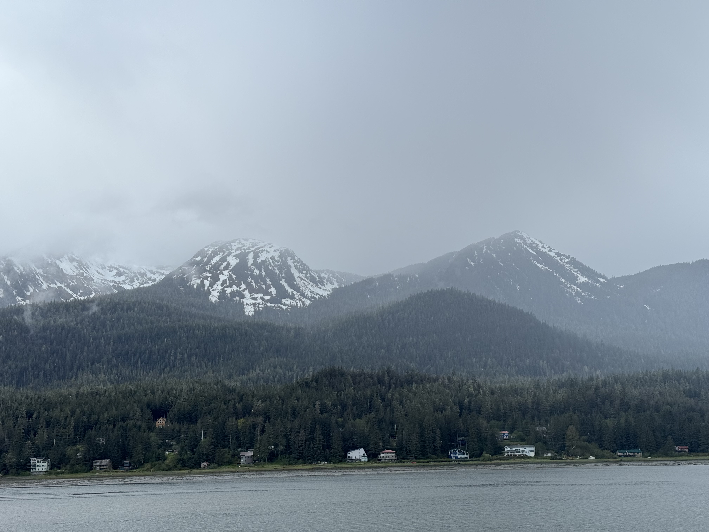
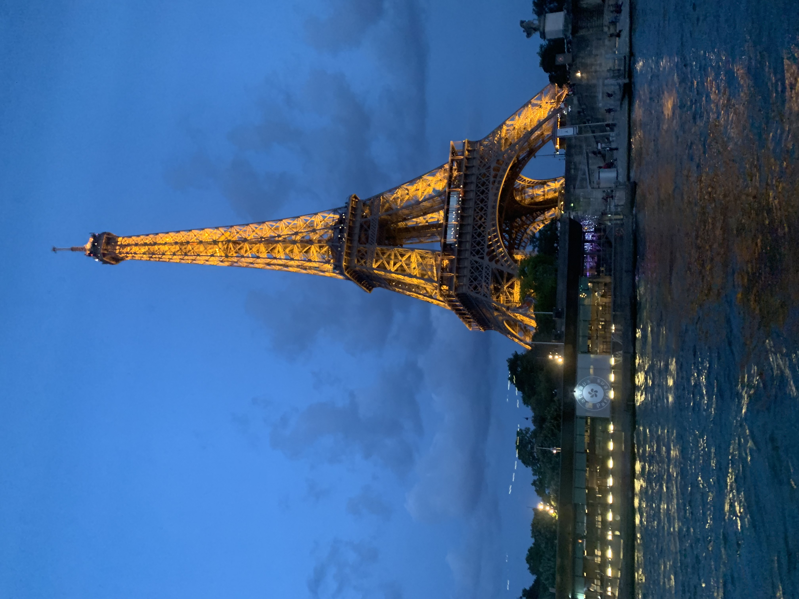
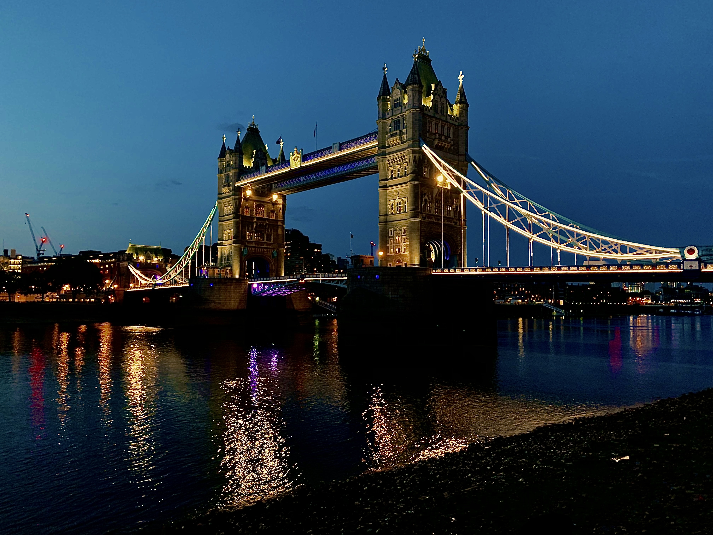

🚀The Man Behind the Screen 🚀

Hello Yall! My name is Parker and I’m the one made what you are seeing right now. As you know I love food, and trying new things. I always love to try something new and let other people know so they know what they are getting into. Let me tell you a little about myself, I’m 23 years old, currently in collage getting my Digital media degree. One thing about me is I love to travel, I have been to quite a few places around the world; like France, the UK, and different parts of Mexico. Hands down my favorite place ive been to is Alaska. The views there was breathtaking and the weather was to die for. Now may not look like type of person to raise any animals, but i did in fact raise pigs for 9 years for my life. I had my days with that but, I loved it. I miss it till this day.
  